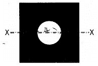
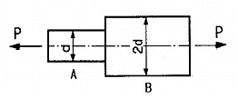
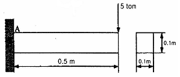
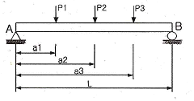
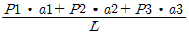
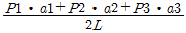
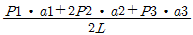
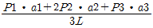
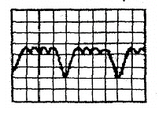

자동차정비산업기사 (2012-05-20 기출문제)
1과목: 일반기계공학
1. 유압유의 점도가 너무 높을 때 발생되는 현상으로 거리가 먼 것은?(오류 신고가 접수된 문제입니다. 반드시 정답과 해설을 확인하시기 바랍니다.)
- 캐비테이션 발생
- 장치의 관내저항에 의한 압력 증대
- 작동유의 비활성으로 응답성 저하
- 내부 및 외부 누설증대
(정답률: 64%)

2. 체인전동의 일반적인 특징을 잘못 설명된 것은?
- 미끄럼이 생기므로 일정한 속도비로 전동이 불가능하다.
- 체인 길이를 신축(伸縮)할 수 있다.
- 고속회전에는 부적당한 편이다.
- 다축 전동이 용이하다.
(정답률: 76%)
3. 다음 탄소강의 첨가원소 중 함유량이 증가하면 내마멸성이 커지고 담금질성을 높게 하는 효과가 있으며, 탈산제로 이용되기도 하고 황에 의하여 일어나는 적열취성을 방지할 수 있는 원소는?
- Cr
- Mn
- W
- Co
(정답률: 77%)
4. 다음 측정치의 통계적 용어에 대한 설명으로 맞는 것은?
- 치우침(bias) : 참값과 모평균과의 차이
- 오차(error) : 측정치와 시료평균과의 차이
- 잔차(residual) : 측정치와 모평균과의 차이
- 편차(deviation) : 측정치와 참값과의 차이
(정답률: 71%)
5. 그림과 같이 한변이 10cm인 정사각형에 지름 4cm의 구멍이 중앙에 뚫린 단면의 도심축(x-x축)에 대한 단면 2차모멘트는 약 얼마인가?

- 821cm2
- 921cm2
- 1021cm2
- 1121cm2
(정답률: 46%)
6. 다음 탄소강 중 내마모성과 경도를 동시에 요구하는 경우에 사용하는 탄소함유량으로 가장 적합한 것은?
- 0.⑤ ~ 0.1%
- 0.2 ~ 0.3%
- 0.3 ~ 0.45%
- 0.65 ~ 1.2%
(정답률: 67%)
7. 스프링 백 현상은 다음 중 어느 작업 시 가장 많이 발생하는가?
- 용접
- 프레스
- 절삭
- 열처리
(정답률: 85%)
8. 어미자의 최소 1눈금이 0.5mm일 때, 버니어 눈금 12mm를 25등분하여 아들자의 눈금으로 사용하는 버니어 캘리퍼스는 이론적으로 최소 몇 mm까지 읽을 수 있는가?
- 2mm
- 1mm
- 0.1mm
- 0.02mm
(정답률: 78%)
9. 그림과 같은 봉에 인장력 P 가 작용하였을 때 B부 지름이 A부 지름의 2배이면 인장 응력의 비( (σA) / (σB) )는?

- 1/4
- 1/2
- 2
- 4
(정답률: 49%)
10. 하이트 게이지의 사용상의 주의점에 관한 설명으로 틀린 것은?
- 측정 전에 정반 표면과 하이트 게이지의 베이스 밑면을 깨끗이 닦고 측정해야 한다.
- 측정 전에 스크라이버 밑면을 정반위에 닿게 하여 0점 확인을 하며, 맞지 않을 경우 0점 조정을 하는 것이 좋다.
- 아베의 원리에 맞는 구조이므로 스크라이버를 정확히 수평으로 셋팅하는 것이 정확도를 올릴 수 있다.
- 시차를 없애기 위해서는 어미자와 버니어의 눈금이 일치하는 곳의 수평 위치에서 눈금을 읽어야 한다.
(정답률: 76%)
11. 바깥지름 20mm, 피치 2mm인 3줄 나사를 1/2 회전하였을 때, 이 나사가 축방향으로 이동한 거리는 몇 mm인가?
- 2
- 3
- 4
- 6
(정답률: 63%)
12. 롤링 베어링의 호칭기호가 N304일 경우 그 설명으로 맞는 것은?
- 원통 롤러 베어링으로 내륜은 양쪽으로 턱이 있고, 외륜은 턱이 없는 구조이며, 내경은 4mm이다.
- 원통 롤러 베어링으로 내륜은 양쪽으로 턱이 있고, 외륜은 한쪽 턱이 있는 구조이며, 내경은 4mm이다.
- 원통 롤러 베어링으로 내륜은 양쪽으로 턱이 있고, 외륜은 턱이 없는 구조이며, 내경은 20mm이다.
- 원통 롤러 베어링으로 내륜은 양쪽으로 턱이 있고, 외륜은 한쪽 턱이 있는 구조이며, 내경은 20mm이다.
(정답률: 64%)
13. 그림과 같이 한 변이 0.1m인 정사각형 단면의 외팔보 끝에 5 ton의 힘이 작용할 경우 A점의 최대굽힘응력은 몇 kgf/cm2 인가?

- 1000
- 1200
- 1500
- 1800
(정답률: 57%)
14. 원통커프링에서 원통을 조이는 힘이 50N, 축의 지름이 30mm일 때 전달할 수 있는 토크는 약 얼마인가? (단, 마찰계수는 0.2이다)
- 150 Nㆍmm
- 471 Nㆍmm
- 300 Nㆍmm
- 942Nㆍmm
(정답률: 40%)
15. 그림과 같이 보의 세 점에 집중하중이 가해지는 경우 B점에서의 반력은?





(정답률: 72%)
16. 터보형 원심식 펌프의 한 종류로서 회전자의 바깥둘레에 안내깃이 없는 펌프는?
- 플런저 펌프
- 볼류트 펌프
- 베인 펌프
- 터빈 펌프
(정답률: 69%)
17. 합성수지의 종류를 열가소성 수지와 열경화성 수지로 구분할 때 열가소성 수지에 해당하는 것은?
- 페놀 수지
- 에폭시 수지
- 아크릴 수지
- 실리콘 수지
(정답률: 56%)
18. 소성가공에 이용되는 성질로 거리가 먼 것은?
- 가단성
- 연성
- 가소성
- 취성
(정답률: 73%)
19. 두 개의 강판이 볼트로 체결되어 500N의 전단력을 받고 있다면, 이 볼트 중간 단면에 작용하는 전단응력은 약 몇 MPa인가? (단, 볼트의 골지름은 10mm 라고 한다.)
- 5.25
- 6.37
- 7.43
- 8.76
(정답률: 46%)
20. 다음 중 진직도 측정에 가장 적합한 것은?
- 수준기
- 사인 바
- 한계게이지
- 마이크로미터
(정답률: 63%)
2과목: 자동차엔진
21. 전자제어 가솔린 분사장치에서 이론 공연비 제어를 목적으로 클로즈드 루프 제어(Closed-loop control)를 하는 보정 분사 제어는?
- 아이들 스피드 제어
- 피드백 제어
- 연료 순차분사 제어
- 점화시기 제어
(정답률: 70%)
22. 압축 천연가스(CNG) 자동차에 대한 설명으로 틀린 것은?
- 연료라인 점검 시 항상 압력을 낮춰야 한다.
- 연료 누출 시 공기보다 가벼워 가스는 위로 올라간다.
- 시스템 점검 전 반드시 연료 실린더 밸브를 닫는다.
- 연료 압력조절기는 탱크의 압력보다 약5bar 가 더 높게 조절한다.
(정답률: 68%)
23. LPG 기관에 사용하는 베이퍼라이저의 설명으로 틀린 것은?
- 베이퍼라이저의 1차실은 연료를 저압으로 감압시키는 역할을 한다.
- 베이퍼라이저의 1차실 압력 측정은 압력계를 설치한 후 기관의 시동을 끄고 측정한다.
- 베이퍼라이저의 1차실 압력 측정은 기관이 웜업된 상태에서 측정함이 바람직하다.
- 베이퍼라이저에는 냉각수의 통로가 설치되어 있어야 한다.
(정답률: 72%)
24. 가솔린 자동차로부터 배출되는 유해물질 또는 발생부분과 규제 배출가스를 짝지은 것으로 틀린 것은?
- 블로바이가스 - HC
- 로커암커버 - NOx
- 배기가스 - CO, HC, NOx
- 연료탱크 - HC
(정답률: 76%)
25. 일반적인 기관성능 곡선도의 설명으로 맞는 것은?
- 엔진 회전속도가 저속일 때 연료 소비율이 가장 적고 축 토크가 가장 적다.
- 엔진 회전이 중속일 때 연료 소비율이 가장 적고 축 토크가 가장 크다.
- 연료 소비율은 엔진 회전속도가 저속과 고속에서 가장 낮다.
- 엔진 회전속도가 고속일 때 흡입 기간이 길어 체적 효율이 높다.
(정답률: 63%)
26. 산소센서 출력 전압에 영향을 주는 요소로 틀린 것은?
- 연료 온도
- 혼합비
- 산소센서의 온도
- 배출가스 중의 산소농도
(정답률: 61%)
27. 주행 중 기관이 과열되는 원인이 아닌 것은?
- 워터 펌프가 불량하다.
- 서모스탯이 열려있다.
- 라디에이터 캡이 불량하다.
- 냉각수가 부족하다.
(정답률: 82%)
28. 배출가스 정밀검사에서 휘발유사용자동차의 부하검사 항목은?
- 일산화탄소, 탄화수소, 엔진정격회전수
- 일산화탄소, 이산화탄소, 공기과잉률
- 일산화탄소, 탄화수소, 이산화탄소
- 일산화탄소, 탄화수소, 질소산화물
(정답률: 77%)
29. 디젤 노크를 일으키는 원인과 관련이 없는 것은?
- 기관의 부하
- 기관의 회전속도
- 점화플러그의 온도
- 압축비
(정답률: 72%)
30. 기관의 윤활방식 중 윤활유가 모두 여과기를 통과하는 방식은?
- 전류식
- 분류식
- 중력식
- 샨트식
(정답률: 77%)
31. 캠축에서 캠의 각부 명칭이 아닌 것은?
- 양정
- 로브
- 플랭크
- 오버랩
(정답률: 71%)
32. 인젝터에 직렬로 저항체를 넣어서 전압을 낮추어 제어하는 방식의 인젝터는?
- 전압 제어식 인젝터
- 전류 제어식 인젝터
- 저 저항식 인젝터
- 고 저항식 인젝터
(정답률: 74%)
33. 밸브의 양정이 15mm일 때 일반적으로 밸브의 지름은?
- 60mm
- 50mm
- 40mm
- 20mm
(정답률: 75%)
34. 전자제어 가솔린 기관에서 EGR 장치에 대한 설명으로 맞는 것은?
- 배출가스 중에 주로 CO와 HC를 저감하기 위하여 사용한다.
- EGR량을 많게 하면 시동성이 향상된다.
- 기관 공회전 시, 급가속 시에는 EGR 장치를 차단하여 출력을 향상시키도록 한다.
- 초기 시동 시 불완전 연소를 억제하기 위하여 EGR량을 90% 이상 공급하도록 한다.
(정답률: 63%)
35. 주행 중 기관이 과열되는 원인과 대책으로 틀린 것은?
- 냉각수가 부족하므로 보충한다.
- 팬 벨트 이완이므로 규정 값으로 조정한다.
- 수온센서 값이 실제 온도보다 높으므로 교환한다.
- 방열기 캡 결함이므로 신품으로 교환한다.
(정답률: 62%)
36. 내연기관의 연소가 정적 및 정압 상태에서 이루어지기 때문에 2중 연소 사이클이라고 하는 것은?
- 오토 사이클
- 디젤 사이클
- 사바테 사이클
- 카르노 사이클
(정답률: 76%)
37. 출력 50 kW의 엔진을 1분간 운전했을 때의 제동출력이 전부 열로 바뀐다면 몇 kJ인가?
- 2500kJ
- 3000kJ
- 3500kJ
- 4000kJ
(정답률: 78%)
38. 칼만 와류(karman vortex)식 흡입공기량 센서를 적용한 전자제어 가솔린 엔진에서 대기압 센서를 사용하는 이유는?
- 고지에서의 산소 희박 보정
- 고지에서의 습도 희박 보정
- 고지에서의 연료 압력 보정
- 고지에서의 점화시기 보정
(정답률: 73%)
39. 가솔린기관에서 밸브 개폐시기의 불량 원인으로 거리가 먼 것은?
- 타이밍벨트의 장력 감소
- 타이밍벨트 텐셔너의 불량
- 크랭크축과 캠축 타이밍 정렬 틀림
- 밸브면의 불량
(정답률: 66%)
40. 가솔린 기관의 유해 배출물 저감에 사용되는 차콜 캐니스터(charcoal canister)의 주 기능은?
- 연료 증발가스의 흡착과 저장
- 질소산화물의 정화
- 일산화탄소의 정화
- PM(입자상 물질)의 정화
(정답률: 78%)
3과목: 자동차섀시
41. 수동변속기에서 기어변속이 불량한 원인으로 틀린 것은?
- 싱크로 나이저 스프링 불량
- 릴리스 실린더 불량
- 컨트롤 케이블의 조정불량
- 디스크 페이싱의 오염
(정답률: 64%)
42. 주행중 자동차의 조향 휠이 한쪽으로 쏠리는 원인이 아닌 것은?
- 타이어 공기압 불균일
- 휠 얼라이먼트의 조정 불량
- 추진축의 밸런스 불량
- 코일 스프링의 마모 혹은 파손 시
(정답률: 63%)
43. 클러치판이 마멸되었을 경우 일어나는 현상으로 틀린 것은?
- 클러치가 슬립한다.
- 클러치페달의 유격이 커진다.
- 가속주행 시 클러치가 미끄러진다.
- 클러치 릴리스 레버의 높이가 높아진다.
(정답률: 55%)
44. 레이디얼 타이어의 장점이 아닌 것은?
- 타이어 단면의 편평률을 크게 할 수 있다.
- 보강대의 벨트를 사용하기 때문에 하중에 의해 트레드가 잘 변형된다.
- 로드 홀딩이 우수하며 스탠딩 웨이브가 잘 일어나지 않는다.
- 선회 시에도 트레드의 변형이 적어 접지 면적이 감소되는 경향이 적다.
(정답률: 79%)
45. 종감속 링기어의 런 아웃(run-out)을 측정하는데 쓰이는 측정기는?
- 다이얼 게이지
- 직정규
- 마이크로 미터
- 디크니스 게이지
(정답률: 77%)
46. 전자제어 동력조향장치의 특성으로 틀린 것은?
- 공전과 저속에서 조향 휠의 조작력이 작다.
- 중속 이상에서는 차량 속도에 감응하여 조향 휠의 조작력을 변화시킨다.
- 솔레노이드 밸브는 스풀밸브 오리피스를 변화시켜 오일탱크로 복귀하는 오일량을 제어한다.
- 동력조향장치는 조향기어가 필요 없다.
(정답률: 75%)
47. 자동차 바퀴가 정적 불 평형 일 때 일어나는 현상은?
- tramping(트램핑)
- shimmy(시미)
- hopping(호핑)
- standing wave(스탠딩 웨이브)
(정답률: 70%)
48. 제동력이 350kgf이다. 이 차량의 차량중량이 1000kgf이라면 제동저항 계수는? (단, 노면마찰계수등 기타조건은 무시한다.)
- 0.25
- 0.35
- 2.5
- 4.0
(정답률: 66%)
49. 다음에서 ABS(Anti-lock Brake System)의 구성부품으로 볼 수 없는 것은?
- 휠 스피드 센서(wheel speed sensor)
- 일렉트로닉 컨트롤 유닛(electronic control unit)
- 하이드로릭 유닛(hydraulic unit)
- 크랭크 앵글센서(crank angle sensor)
(정답률: 80%)
50. 자동차의 종감속장치인 하이포이드 기어의 장점이 아닌 것은?
- 추진축 높이를 낮출 수 있다.
- 기어 물림률이 커 회전이 정숙하다.
- 무게중심이 낮아져 안전성이 증대된다.
- 기어 이의 폭 방향으로 미끄럼접촉을 하므로 압력이 작다.
(정답률: 66%)
51. 제동안전장치 중 프로포셔닝 밸브의 역할은 무엇인가?
- 앞바퀴와 뒷바퀴의 제동압력을 분배하기 위하여
- 앞바퀴의 제동압력을 감소시키기 위하여
- 뒷바퀴의 제동압력을 증가시키기 위하여
- 무게중심을 잡기 위하여
(정답률: 82%)
52. 자동변속기의 변속기어 위치(select pattern)에 대하여 올바른 것은?(단, P : 주차위치, R : 후진위치, D : 전진위치 2ㆍ1 : 저속전진위치)
- P-R-N-D-2-1
- R-N-D-P-2-1
- R-N-P-D-2-1
- P-N-R-D-2-1
(정답률: 85%)
53. 4센서 4채녈 ABS에서 하나의 휠 스피드 센서(wheel speed sensor) 가 고장일 경우의 현상 설명으로 옳은 것은?
- 고장 나지 않은 나머지 3바퀴만 ABS가 작동한다.
- 고장 나지 않은 바퀴 중 대각선 위치에 있는 2바퀴만 ABS가 작동한다.
- 4바퀴 모두 ABS가 작동하지 않는다.
- 4바퀴 모두 정상적으로 ABS가 작동한다.
(정답률: 66%)
54. 싱글 피니언 유성기어 장치를 사용하는 오버 드라이브 장치에서 선기어가 고정된 상태에서 링기어를 회전시키면 유성기어 캐리어는?
- 회전수는 링기어 보다 느리게 된다.
- 링기어와 함께 일체로 회전하게 된다.
- 반대 방향으로 링기어 보다 빠르게 회전하게 된다.
- 캐리어는 선기어와 링기어 사이에 고정된다.
(정답률: 59%)
55. 주행 중 차량에 노면으로부터 전달되는 충격이나 진동을 완하여 바퀴와 노면과의 밀착을 양호하게 하고 승차감을 향상시키는 완충 기구는?
- 코일스프링, 겹판스프링, 토션바
- 코일스프링, 토션바, 타이로드
- 코일스프링, 겹판스프링, 프레임
- 코일스프링, 너클 스핀들, 스테이빌라이저
(정답률: 75%)
56. 제동 안전장치 중 안티스키드 장치(anti - skid system) 에 사용되는 밸브가 아닌 것은?
- 언로더 밸브(unloader valve)
- 프로포셔닝 밸브(proportioning valve)
- 리미팅 밸브(limiting valve)
- 이너셔 밸브(inertia valve)
(정답률: 51%)
57. 대기압이 1035hPa일 때, 진공 배력장치에서 진공부스터의 유효압력차는 2.85N/cm2, 다이어프램의 유효면적이 600 cm2 이면 진공 배력은?
- 4500 N
- 1710 N
- 9000 N
- 2250 N
(정답률: 58%)
58. 자동차 앞바퀴 정렬 중 캐스터에 관한 설명은?
- 자동차의 전륜을 위에서 보았을 때 바퀴의 앞부분이 뒷부분보다 좁은 상태를 말한다.
- 자동차의 전륜을 앞에서 보았을 때 바퀴의 중심선의 위부분이 약간 벌어져 있는 상태를 말한다.
- 자동차의 전륜을 옆에서 보면 킹핀의 중심선이 수직선에 대하여 어느 한쪽으로 기울어져 있는 상태를 말한다.
- 자동차의 전륜을 앞에서 보면 킹핀의 중심선이 수직선에 대하여 약간 안쪽으로 설치된 상태를 말한다.
(정답률: 77%)
59. 중량이 2400kgf인 화물자동차가 80km/h로 정속 주행 중 제동을 하였더니 50m에서 정지하였다. 이 때 제동력은 차량 중량의 몇 %인가? (단, 회전부분 상당중량 7%)(오류 신고가 접수된 문제입니다. 반드시 정답과 해설을 확인하시기 바랍니다.)
- 46
- 54
- 62
- 71
(정답률: 47%)
60. 공기식 현가장치에서 벨로스형 공기 스프링 내부의 압력 변화를 완화하여 스프링 작용을 유연하게 해 주는 것은?
- 언로드 밸브
- 레벨링 밸브
- 서지 탱크
- 공기 압축기
(정답률: 53%)
4과목: 자동차전기
61. 전조등 4핀 릴레이를 단품 점검하고자 할 때 적합한 시험기는?
- 전류 시험기
- 축전기 시험기
- 회로 시험기
- 전조등 시험기
(정답률: 68%)
62. 전자제어 구동력 조절장치(TCS)의 컴퓨터는 구동바퀴가 헛돌지 않도록 최적의 구동력을 얻기 위해 구동 슬립율이( )가 되도록 제어한다. 괄호 안에 알맞은 말은?
- 약 5 ~ 10%
- 약 15 ~ 20%
- 약 25 ~ 30%
- 약 35 ~ 40%
(정답률: 65%)
63. 운행자동차의 2등식과 4등식 전조등의 주행빔 1등당 광도 기준으로 안전기준에 적합한 것은?
- 2등식 : 12000칸델라 이상 ~ 112000칸델라 이하
4등식 : 15000칸델라 이상 ~ 112500칸델라 이하 - 2등식 : 15000칸델라 이상 ~ 112000칸델라 이하
4등식 : 15000칸델라 이상 ~ 112500칸델라 이하 - 2등식 : 12000칸델라 이상 ~ 112500칸델라 이하
4등식 : 15000칸델라 이상 ~ 112000칸델라 이하 - 2등식 : 15000칸델라 이상 ~ 112500칸델라 이하
4등식 : 12000칸델라 이상 ~ 112500칸델라 이하
(정답률: 71%)
64. 자동차 전조등의 광도 및 광축을 측정(조정)할 때 유의사항 중 틀린 것은?
- 시동을 끈 상태에서 측정한다.
- 타이어 공기압을 규정 값으로 한다.
- 차체의 평형상태를 점검한다.
- 축전지와 발전기를 점검한다.
(정답률: 83%)
65. 차량에서 축전지의 기능으로 옳은 것은?
- 각종 부하 조건에 따라 발전 전압을 조정하여 과충전을 방지한다.
- 기관의 시동 후 각종 전기 장치의 전기적 부하를 전적으로 부담한다.
- 주행 상태에 따른 발전기의 출력과 전기적 부하와의 불균형을 조정한다.
- 축전지는 시동 후 일정시간 방전을 지속하여 발전기의 부담을 줄여준다.
(정답률: 59%)
66. 가솔린 엔진에서 기동 전동기의 소모전류가 90A이고, 축전지 전압이 12V일 때 기동전동기의 마력은?
- 약 0.76PS
- 약 1.26PS
- 약 1.47PS
- 약 1.78PS
(정답률: 66%)
67. 반도체 소자로서 이중접합(PNP)에 적용 되지 않는 것은?
- 사이리스터
- 포토트랜지스터
- 가변용량다이오드
- PNP트랜지슨터
(정답률: 62%)
68. 온수식 히터 장치의 실내온도 조절방법으로 틀린 것은?
- 온도조절 액추에이터를 이용하여 열 교환기를 통과하는 공기량을 조절한다.
- 송풍기 모터의 회전수를 제어하여 온도를 조절한다.
- 열 교환기에 흐르는 냉각수량을 가감하여 온도를 조절한다.
- 라디에이터 팬의 회전수를 제어하여 열 교환기의 온도를 조절한다.
(정답률: 49%)
69. 온도와 저항의 관계를 설명한 것으로 옳은 것은?
- 일반적인 반도체는 온도가 높아지면 저항이 작아진다.
- 도체의 경우는 온도가 높아지면 저항이 작아진다.
- 부특성 서미스터는 온도가 낮아지면 저항이 작아진다.
- 정특성 서미스터는 온도가 높아지면 저항이 작아진다.
(정답률: 54%)
70. 연료탱크에 연료가 가득 차 있는데 연료경고등(NTC)이 점등 될 수 있는 요인으로 맞는 것은?
- 경고등 접지선의 단선
- 서미스터의 결함
- 퓨즈의 단선
- 경고등 전원선의 단락
(정답률: 75%)
71. 전기회로에서 전압강하의 설명으로 틀린 것은?
- 불완전한 접촉은 저항의 증가로 전장품에 인가되는 전압이 낮아진다.
- 저항을 통하여 전류가 흐르면 전압강하가 발생하지 않는다.
- 전류가 크고 저항이 클수록 전압강하도 커진다.
- 회로에서 전압강하의 총합은 회로에 공급전압과 같다.
(정답률: 60%)
72. 무배전기식(DLL 타입) 점화장치의 드웰(dwell) 시간에 관한 설명으로 맞는 것은?
- 드웰 시간이 길면 점화시기가 빨라진다.
- 점화시기 변화는 드웰 시간과 관계없다.
- 드웰 시간은 파워 트랜지스터가 ON 되고 있는 시간을 말한다.
- 드웰 시간은 C(컬렉터) 단자에서 B(베이스)단자로 전류가 차단된다.
(정답률: 72%)
73. 전압 24V, 출력전류 60A인 자동차용 발전기의 출력은?
- 0.36kW
- 0.72kW
- 1.44kW
- 1.88kW
(정답률: 75%)
74. 자동차용 발전기 점검사항 및 판정에 대한 설명으로 틀린 것은?
- 스테이터 코일 단선 점검시 시험기의 지침이 움직이지 않으면 코일이 단선된 것이다.
- 다이오드 점검시 순방향은 ∞Ω쪽으로 역방향은 0Ω쪽으로 지침이 움직이면 정상이다.
- 슬립링과 로터 축 사이의 절연 점검시 시험기의 지침이 움직이면 도통된 것이다.
- 로터 코일 단선 점검시 시험기의 지침이 움직이지 않으면 코일이 단선된 것이다.
(정답률: 68%)
75. 자동차 발전기의 출력신호를 측정한 결과이다. 이 발전기는 어떤 상태인가?

- 정상 다이어드 파형
- 다이오드 단선 파형
- 스테이터 코일단선 파형
- 로터코일 단락 파형
(정답률: 62%)
76. 에이컨에서 냉매 흐름 순서를 바르게 표시한 것은?
- 컨덴서 → 증발기 → 팽창밸브 → 컴프레서
- 컨덴서 → 컴프레서 → 팽창밸브 → 증발기
- 컨덴서 → 팽창밸브 → 증발기 → 컴프레서
- 컴프레서 → 팽창밸브 → 컨덴서 → 증발기
(정답률: 60%)
77. 전자 점화장치(HEI : High energy ignition)의 특성으로 틀린 것은?
- HC가스가 증가한다.
- 고속성능이 향상된다.
- 최적의 점화시기 제어가 가능하다.
- 점화성능이 향상된다.
(정답률: 83%)
78. 등화장치에 대한 설치기준으로 틀린 것은?
- 차폭등의 등광색은 백색ㆍ황색ㆍ호박색으로 하고, 양쪽의 등광색을 동일하게 하여야 한다.
- 번호등의 바로 뒤쪽에서 광원이 직접 보이지 아니하는 구조여야 한다.
- 번호등의 등록번호표 숫자 위의 조도는 어느 부분에서도 5룩스 이상이어야 한다.
- 후미등의 1등당 광도는 2칸델라 이상 25칸델라 이하이어야 한다.
(정답률: 69%)
79. 자동차의 납산 축전지에서 방전 시 일어나는 현상으로 틀린 것은?
- 양극판(과산화납)의 황산납으로 변한다.
- 음극판(해면상납)은 황산납으로 변한다.
- 배터리의 전해액 비중은 떨어진다.
- 전해액의 묽은 황산은 산화납으로 변한다.
(정답률: 66%)
80. 후퇴등의 1등당 광도는 등화중심선 아래쪽에서 얼마인가?
- 50 ~ 8000cd
- 80 ~ 6000cd
- 70 ~ 7000cd
- 80 ~ 5000cd
(정답률: 54%)